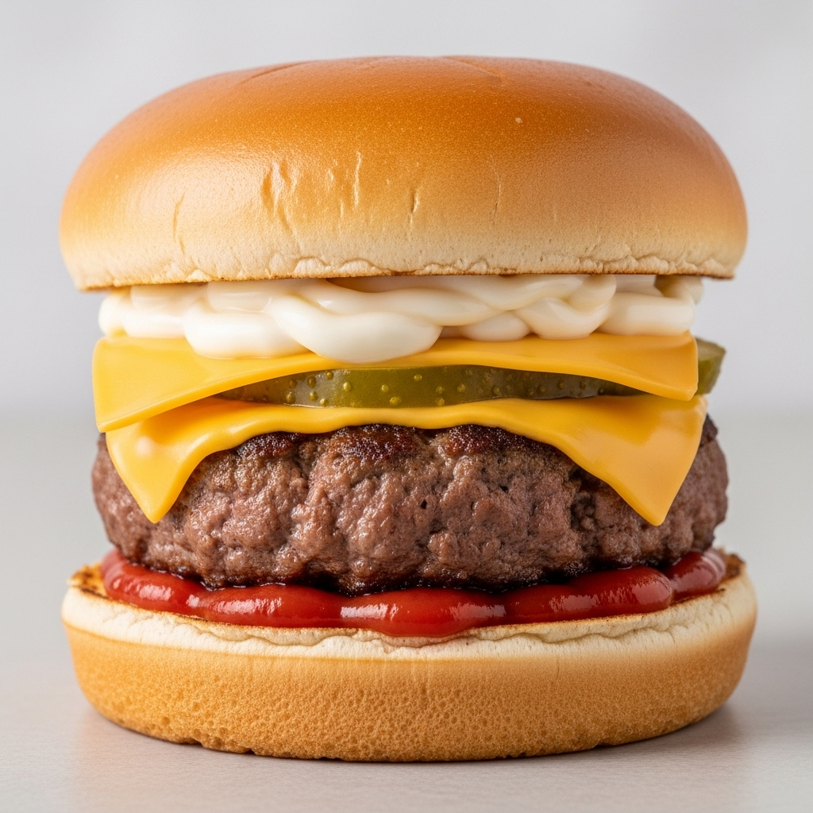

Fast Food Recipes
Home
Cheesy Beef Burger

Description:
This cheese beef burger is a juicy, classic-style burger stacked with melted cheese, crunchy pickles, smooth mayo, and a soft, golden bun. It’s simple, satisfying, and perfect for anyone craving a no-nonsense cheeseburger with big flavor.
The combination of a tender beef patty, creamy sauces, and gooey cheese makes this burger a comfort-food favorite. It’s quick to prepare and great for lunch, dinner, or a weekend treat.
Ingredients:
- 1 beef patty
- 1 burger bun (top and bottom)
- 2 slices of cheddar cheese
- sliced pickles
- Ketchup
- Mayonnaise
- Salt and pepper to taste
- Cooking oil or butter for frying
Instructions:
- Season the beef patty with salt and pepper on both sides.
- Heat a skillet or grill over medium-high heat and add a little oil or butter.
- Cook the beef patty for about 3-4 minutes on each side, or until it reaches your desired level of doneness.
- During the last minute of cooking, place the cheddar cheese slices on top of the patty to melt.
- Toast the burger bun halves in the skillet or grill until golden brown.
- Spread ketchup on the bottom bun.
- Place the cooked cheesy patty on top of the ketchup.
- Add sliced pickles on top of the cheese.
- Spread mayonnaise on the top bun.
- Assemble the burger, serve and enjoy!